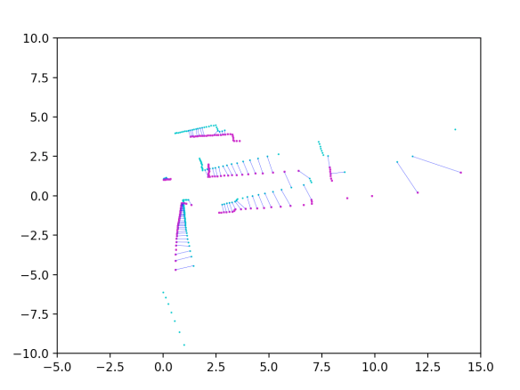

Milestone 2
Overview
To begin phase two, we did some overall architectural planning to map out who will be responsible for which code and how it will be written, as some systems use overlapping functionality.
At a high level, there are two main modes of operation. There is a mapping mode that explores to develop the initial map. Once this is complete, it switches into cleaning mode to execute coverage path planning. Here is an overview of the functionality needed, how it will be written, and which mode it is for.
Both Modes
-
A* (function)
- Finds an obstacle-avoiding path to the target point
-
Driving to waypoints (action server)
- Low-level controls that send velocity commands to follow a list of waypoints
Mapping Mode
-
Mapping (node):
- Manages the whole mapping process. Uses frontier finding to get target areas to explore. It generates a route to get there with A*, then executes by calling the drive to waypoints action server. Once this completes, it checks if the map is "complete". If not, it repeats.
-
Frontier finding (function)
- Finds and ranks the best points to explore based on the current slam map and boundaries between empty and unmapped areas
-
Map complete (function)
- Function to return whether the map is sufficiently explored, based on the existing list of frontiers to explore.
- SLAM toolbox (launch existing SLAM toolbox)
Cleaning Mode:
-
Cleaning (node):
- Manages cleaning by orchestrating the use of BCD planning, A*, and drive to waypoints action server
-
Localization (node):
- Use Kalman filter to publish better localization to topic
- Boustrophedon Cellular Decomposition planning (function/class)
Exploration Path Planning
Progress
At the moment, the code to find frontiers is nearly done, and the code to rank these frontiers is partially done. We have also outlined what the SLAM exploration control architecture is going to look like.
Plan to Finish and Risks
The current plan to finish is as follows:
- Finish code to find and rank frontiers.
- Refactor code so that the frontier-finding algorithm is a function and the existing node can hold the SLAM exploration control logic.
- Implement control logic that uses the A* function and waypoint navigation action server to navigate to keypoints.
- Save the map with user input.
The following functionalities will likely be stretch goals:
- Determine whether an area has been 'fully' explored
The primary risks here are uncertainty about the final logic and challenges with integration/debugging. The control logic relies on two separate implementations (A* and waypoint navigation) that I am not personally working on, and so I may not be able to fully test components of my code until later on. There is also uncertainty in terms of how much time I will have to dedicate to the project.
Coverage Path Planning
Progress
Coverage path planning is going well. I've found a couple example implementations on GitHub that I'm referencing for the math. Right now don't have the best sample map, but the main issue right now is that the path goes through sections of wall when traversing from one section to the next occasionally.
Plan to Finish and Risks
I need to match the occupancy grid I'm getting as an input to the actual grid I use, I need to get the robot to not drive through walls, and I need to measure the Neato for its size for an accurate width of pass.
As for risks, I'm not 100% sure how to stop the path from colliding with the wall in transitions between sections. Another thing I'm worried about is the accuracy of the map, and the accuracy of the Neato itself. The path may look good on the computer, but how can I allow for a bit of error on the Neato side?
SLAM
Progress
- The slam toolbox is added to the system launch file, and reads /scan and /odom data and publishes an occupancy grid.
Plan to Finish and Risks
- While the robot is in the mapping phase, the occupancy grid is collected. After the robot is done mapping, the occupancy will need to freeze or be copied for the coverage algorithm.
Go To Point
Progress
We have written a first draft of the waypoint following action server. It is currently fairly simple. It rotates to the direction of the next point, then drives for the calculated amount of time. It currently uses open-loop controls. It also returns feedback on which waypoint it is currently on to the client.
Plan to Finish and Risks
We will improve the control scheme of going to points as needed by incorporating the Kalman filter/SLAM location data to close the loop. We haven't started A* yet, and this is a priority to finish early this week to test the action server further and as a dependency for the rest of the code.
The biggest risk is ensuring waypoint reaching accuracy. To mitigate this, the MVP is running in simulation where the sensors are more accurate.
Localization
Progress
Current work has been towards implementing the Iterative Closest Point (ICP) algorithm which will be used to calculate LIDAR odometry, essentially the translation and rotation between 2 scans. There is still a lot of debug work happening for our own implementation, but we found a library that performs ICP with sufficient accuracy that we can use for now.

Plan to Finish and Risks
ICP for LIDAR odometry will be part of the sensor model, which is part of the whole Kalman Filter. Regarding future development for the filter, the motion model should be fairly straight forward (we hope) where it is based off of velocity commands and its corresponding covariance based on a generic white-noise model. The full sensor model implementation would probably be a little more complex, where I need to figure out how to structure its covariance matrix.
Regarding risks, the biggest risk is the performance of the filter and the ability to debug it. If the filter performance is bad, the robot is unable to path properly. As a last resort fall-back plan, since we are working in simulation, we could use the ground-truth odometry data provided.
Integration Plan
To integrate, we plan on getting each section working individually by this weekend, with integrations between closely tied systems already tested. For example, we will have already tested A* with the driving to waypoints action server. We have also coordinated the architecture ahead of time, so there won't be significant architectural conflicts.
Since this is a complex system with many moving pieces, we do foresee the inevitable integration challenges, so we are planning to meet as a team to work through them over the weekend.